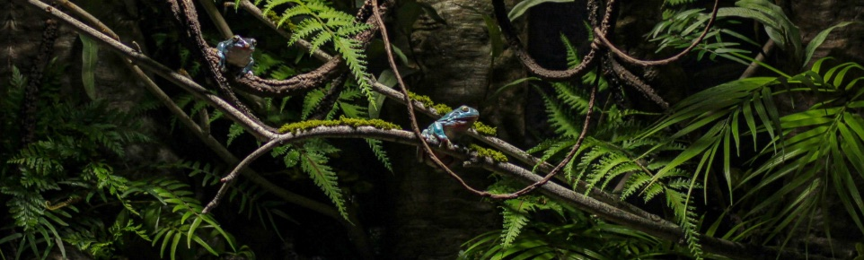
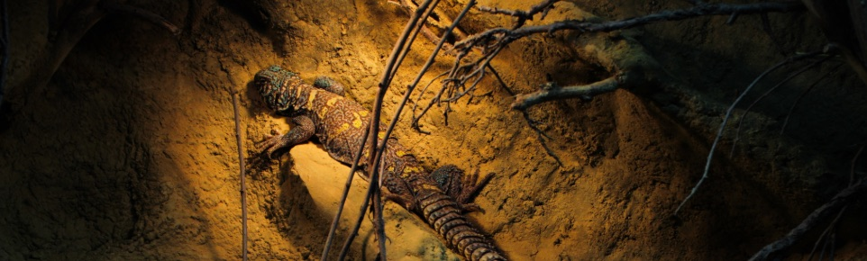
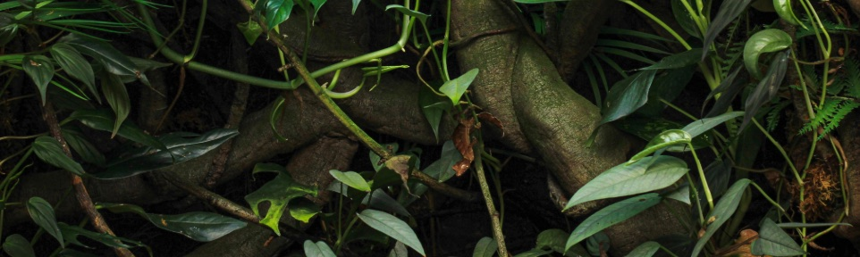
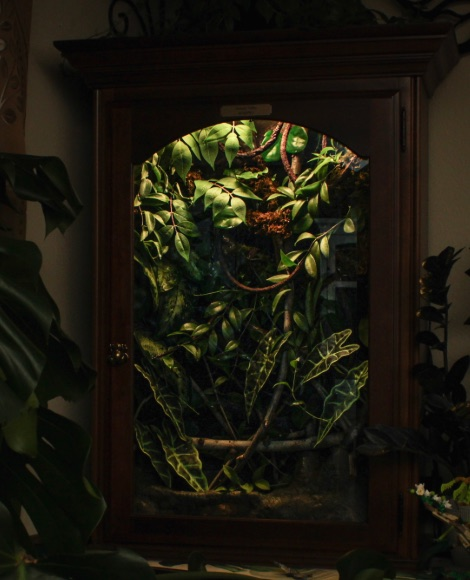
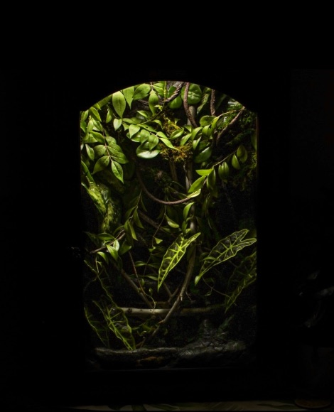
24"L x 12"W x 36"H
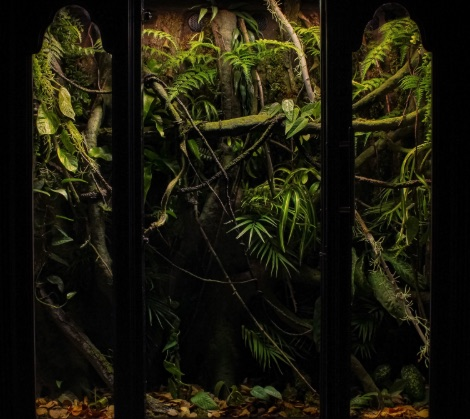
48"L x 16"W x 48"H
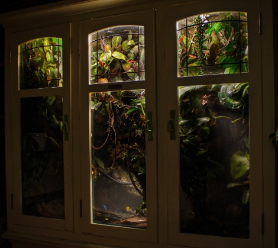
60"L x 16"W x 40"H
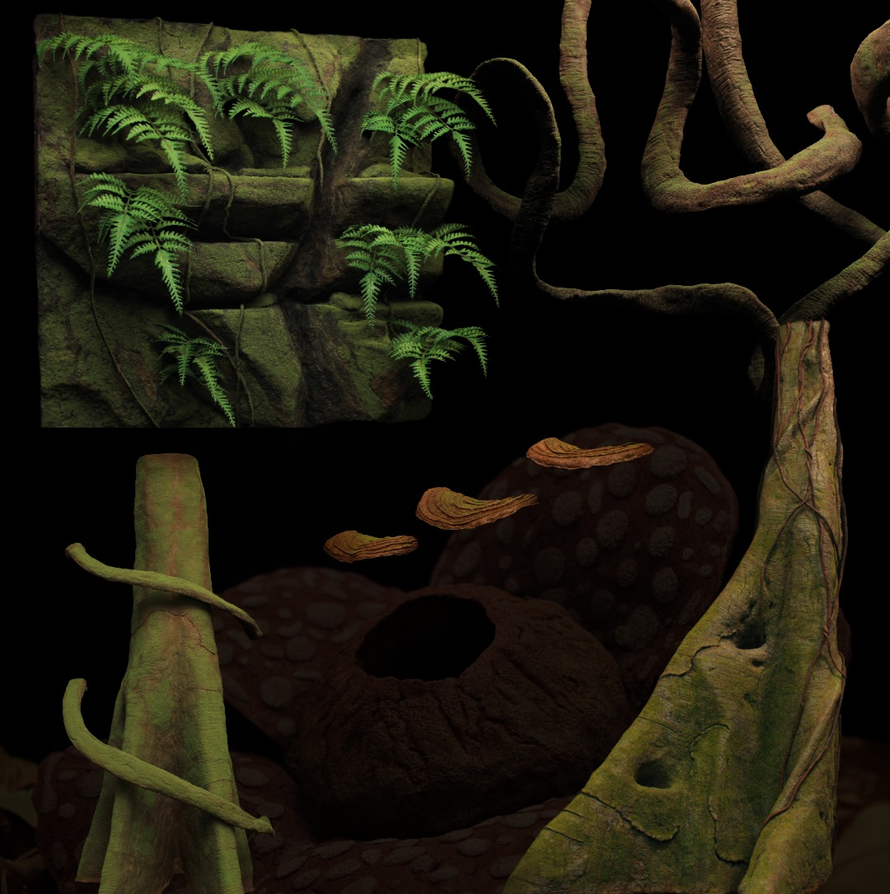
Every natural element is fabricated by hand: rock walls, vines, buttress roots, shelf fungi and hides, each sculpted and textured to fit each enclosure and the animal that will live in it.
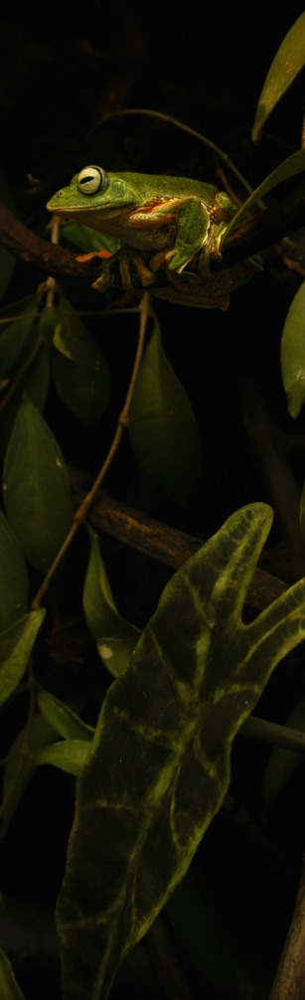
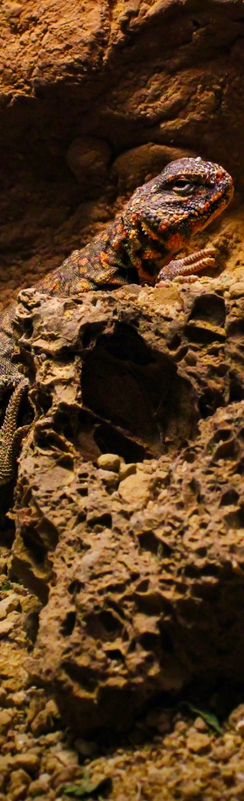
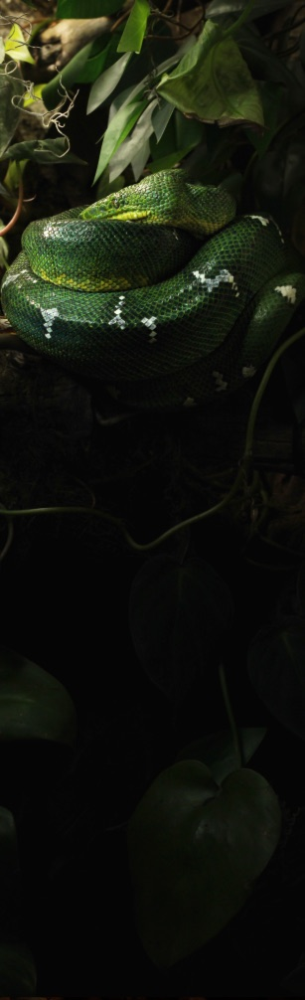